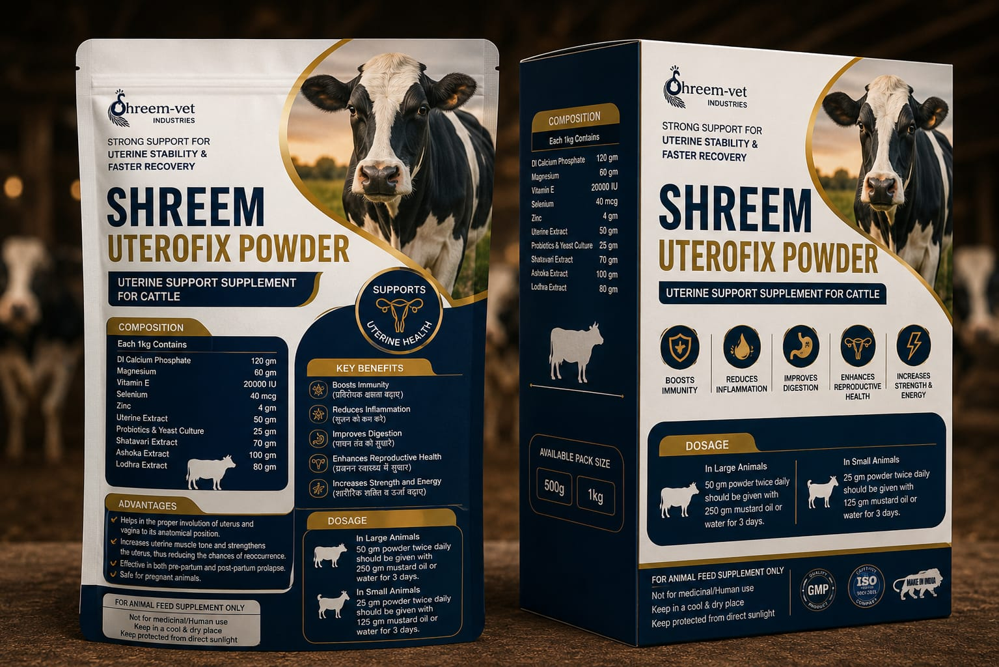
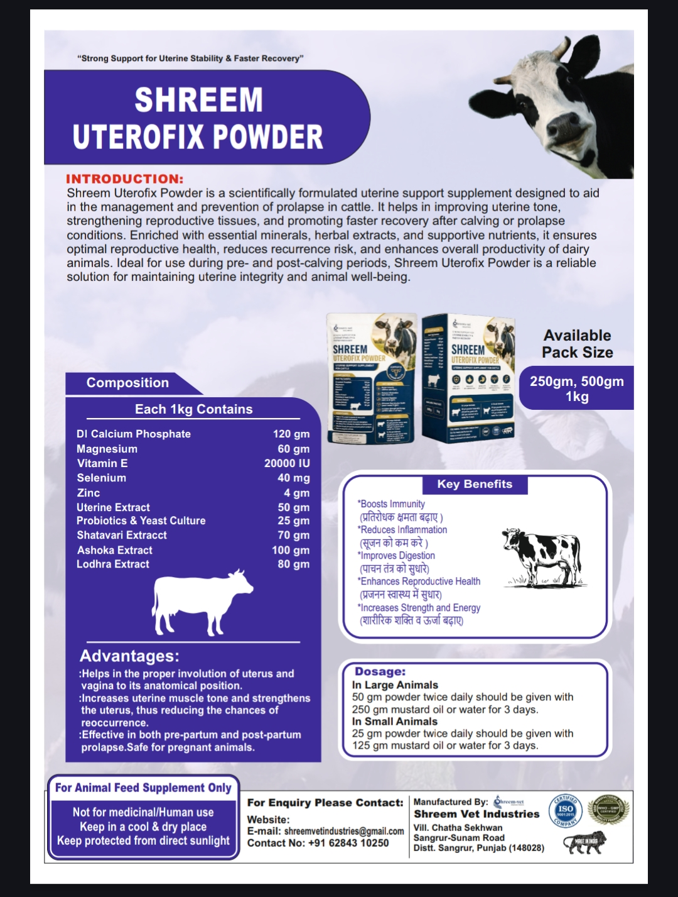

Shreemvet Industries
UTEROFIX POWDER
Strong Support for Uterine Stability & Faster Recovery
Product Details
Composition (Each 1kg Contains)
| DI Calcium Phosphate | 120 gm |
|---|---|
| Magnesium | 60 gm |
| Vitamin E | 20000 IU |
| Selenium | 40 mg |
| Zinc | 4 gm |
| Uterine Extract | 50 gm |
| Probiotics & Yeast Culture | 25 gm |
| Shatavari Extract | 70 gm |
| Ashoka Extract | 100 gm |
| Lodhra Extract | 80 gm |
Product Description
- Shreem Uterofix Powder is a scientifically formulated uterine support supplement designed to aid in the management and prevention of prolapse in cattle. It helps in improving uterine tone, strengthening reproductive tissues, and promoting faster recovery after calving or prolapse conditions. Enriched with essential minerals, herbal extracts, and supportive nutrients, it ensures optimal reproductive health, reduces recurrence risk, and enhances overall productivity of dairy animals. Ideal for use during pre- and post-calving periods, Shreem Uterofix Powder is a reliable solution for maintaining uterine integrity and animal well-being.
Key Benefits
- Boosts Immunity
- Reduces Inflammation
- Improves Digestion
- Enhances Reproductive Health
- Increases Strength and Energy
Advantages
- Helps in the proper involution of uterus and vagina to its anatomical position.
- Increases uterine muscle tone and strengthens the uterus, thus reducing the chances of reoccurrence.
- Effective in both pre-partum and post-partum prolapse. Safe for pregnant animals.
Dosage
- In Large Animals: 50 gm powder twice daily should be given with 250 gm mustard oil or water for 3 days.
- In Small Animals: 25 gm powder twice daily should be given with 125 gm mustard oil or water for 3 days.
Brochure
